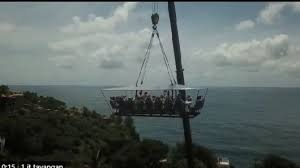

Pernahkah kamu membayangkan duduk santai menikmati kopi di ketinggian puluhan meter di atas tanah? Apakah kamu merasa aman ketika berada di atas sana? Untuk memahami hal tersebut, perhatikan peristiwa berikut.
Sebuah wahana wisata bernama Ngopi in the Sky mengangkat sekitar 20 orang menggunakan gondola yang digantung oleh crane hingga ketinggian sekitar 30 meter. Total massa pengunjung dan gondola dapat mencapai kurang lebih 5 ton. Saat berada di atas, gondola terkena hembusan angin laut yang cukup kencang. Beberapa pengunjung merasakan kursi sedikit bergoyang dan lantai terasa licin.
Pemerintah kemudian menghentikan operasional wahana tersebut karena dinilai berisiko terhadap keselamatan. Kekhawatiran utama adalah apakah sistem crane dan gantungan mampu menahan beban, baik saat pengunjung diam maupun bergerak.
Dari peristiwa ini muncul pertanyaan penting: gaya-gaya apa saja yang bekerja pada gondola dan pengunjung sehingga sistem tersebut dapat tetap seimbang atau justru berpotensi menimbulkan kecelakaan?
Untuk memahami peristiwa tersebut, kita perlu mengenali tiga jenis gaya utama, yaitu gaya berat, gaya normal, dan gaya gesek.
Gaya berat adalah gaya tarik bumi terhadap suatu benda. Besarnya dapat dihitung dengan persamaan:
Gaya berat selalu arahnya ke bawah, menuju pusat bumi. Pada wahana tersebut, gaya berat bekerja pada setiap pengunjung dan juga pada gondola.
Gaya normal adalah gaya yang diberikan oleh suatu permukaan untuk menopang benda yang berada di atasnya. Arahnya tegak lurus permukaan.
Dalam kasus ini, kursi memberikan gaya normal pada tubuh pengunjung agar mereka tidak jatuh menembus kursi. Lantai gondola juga memberikan gaya normal pada kaki pengunjung.
Gaya gesek adalah gaya yang muncul akibat kontak antara dua permukaan dan arahnya berlawanan dengan kecenderungan gerak.
Pada wahana tersebut, gaya gesek antara sepatu dan lantai gondola mencegah pengunjung tergelincir, terutama ketika gondola bergoyang akibat angin.
Ingat: gaya gesek membantu mencegah gerakan yang tidak diinginkan.
Ketika gondola diam dan tidak bergoyang, sistem berada dalam keadaan seimbang. Gaya berat yang bekerja ke bawah diimbangi oleh gaya tarik tali baja dan struktur crane ke atas. Pada pengunjung, gaya berat tubuh diimbangi oleh gaya normal dari kursi.
Namun, ketika angin bertiup kencang dan gondola sedikit bergoyang, keseimbangan gaya dapat terganggu. Jika pengunjung berdiri atau bergerak tiba-tiba, distribusi gaya pada sistem berubah.
Selain itu, jika lantai terasa licin, gaya gesek antara sepatu dan lantai menjadi kecil. Akibatnya, pengunjung lebih mudah tergelincir karena gaya gesek tidak cukup besar untuk menahan kecenderungan gerak tubuh.
Dengan demikian, keamanan wahana tidak hanya ditentukan oleh kuatnya crane, tetapi juga oleh besar gaya berat total, kemampuan struktur memberikan gaya penopang, serta cukup tidaknya gaya gesek untuk mencegah tergelincir.
Gaya gesek sering dianggap kecil dan tidak penting. Namun dalam kasus ini, gaya gesek memiliki peran krusial.
Jika gaya gesek antara sepatu dan lantai besar, pengunjung tetap stabil meskipun ada goyangan kecil. Sebaliknya, jika lantai licin sehingga koefisien gesek kecil, maka sedikit gangguan saja dapat menyebabkan orang tergelincir.
Hal ini menunjukkan bahwa faktor keselamatan tidak hanya bergantung pada kekuatan struktur, tetapi juga pada kondisi permukaan tempat berpijak.
Untuk memperjelas konsep gaya berat, gaya normal, dan gaya gesek, perhatikan eksperimen virtual tentang benda pada bidang miring.
Dalam simulasi tersebut, kamu dapat:
Ketika massa diperbesar, gaya berat meningkat. Ketika sudut kemiringan diperbesar, komponen gaya berat yang menyebabkan benda meluncur semakin besar. Ketika koefisien gesekan diperkecil, gaya gesek berkurang sehingga benda lebih mudah bergerak.
Fenomena dalam simulasi tersebut sejalan dengan peristiwa pada wahana di ketinggian. Jika gaya berat total terlalu besar atau gaya gesek terlalu kecil, maka sistem menjadi lebih berisiko.
Dengan bantuan eksperimen virtual, kita dapat memahami bahwa keselamatan suatu sistem bergantung pada keseimbangan dan interaksi antara gaya berat, gaya normal, dan gaya gesek.